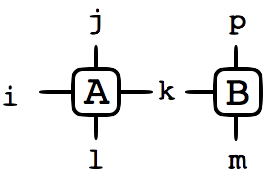

BTAS is a C++ library for performing operations on dense tensors. It provides high efficiency and flexibility with a convenient interface.
Features include:
- Tensor class supporting efficient contraction and arithmetic.
- Linear algebra package for tensor decompositions.
- Serialization of tensors.
Code Samples
Contracting Tensors
// Set index ranges
Tensor<double> A(10,2,10,2),
B(2,10,2);

// Set tensor components
A(0,1,0,1) = -0.5;
A(1,1,1,1) = 0.5;
B(0,4,1) = 1.8;
// etc.
// Use integers (here enum) to label
// uncontracted and contracted indices
enum { i,j,k,l,m,p };
// result will be C = 1.0*A*B + 1.0*C
contract(1.0,
A,{i,j,k,l},
B,{m,k,p},
1.0,
C,{m,l,i,j,p});